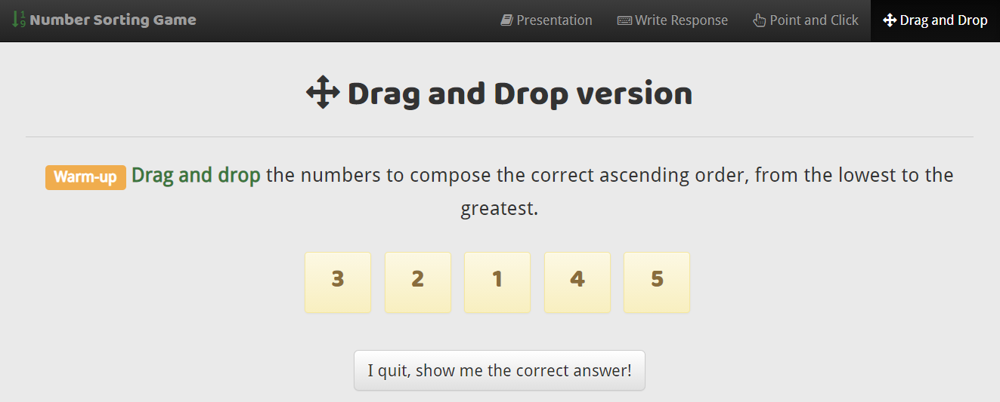

Glisser-déposer dans une application web
Mattia A. Fritz
TECFA, Université de Genève
Définition du glisser-déposer
— Adapté depuis Wikipedia
Number Sorting Games
Application avec trois modalités interactives différentes, dont le glisser-déposer.
Technique répandue, mais...
Le glisser-déposer existe depuis plusieurs années, mais présentent deux éléments critiques :
-
Affordance et action exécutée
Surtout dans les pages web, le glisser-déposer doit être bien signalé et ses effets indiqués aux utilisateurs. -
Dextérité et motricité fine
L'action physique du glisser-déposer implique une planification et une exécution nécessitant d'une certaine précision et risque d'être interrompue.
Affordance et action exécutée
— Adapté depuis Wikipedia
Dextérité et motricité fine
— Adapté depuis Wikipedia
Exemple avec petite cible
Glissez le robot dans le carré jaune à l'autre côté de l'écran.
Exemple avec grande cible
Glissez le robot dans le carré jaune à l'autre côté de l'écran.
Utilisations pédagogiques
-
Rélation item-conteneur
Déposer un item dans un conteneur avec une relation sémantique, par exemple les éléments d'une même catégorie. -
Degrés d'approximation spatiale ou temporelle
Placer un élément le plus proche possible dans une relation spatiale ou sur une timeline temporelle. -
Correspondance visuo-spatiale physique ou conceptuelle
Le positionnement absolu et/ou relatif des éléments dans l'espace véhicule de l'information utile au niveau physique ou conceptuel.
Liste non exhaustive et items non mutuellement exclusifs.
Relation item-conteneur
Glissez les verbs en anglais dans le temps verbal.
Present tense
Past tense
Degrés d'approximation
Glissez les villes selon leur distance autoroutière de Genève.
0km
100km
200km
300km
400km
500km
- Bern 0
- Lausanne 0
- Saint Gallen 0
- Zürich 0
Correspondance visuo-spatiale
Pour aller plus loin
Les concepts abordés dans cette présentation sont traités de manière plus technique dans un article sur EduTechWiki.
EduTechWiki est un wiki sur la technologie éducative hébergé est maintenu par TECFA, une unité de l'Université de Genève, depuis 2006.
Merci pour votre attention !
Présentation créée avec
Reveal.js.